Практичний досвід · журнал «ДентАрт» 2024 №3
Апікальна хірургія у повсякденній практиці ендодонтиста
APICAL SURGERY IN THE DAILY PRACTICE OF AN ENDODONTIST
Лікар-стоматолог часто зустрічається з тим, що пацієнти, як вони гадають, достатньо обізнані, знають багато аспектів нашої професії та мають власну думку про правильний підхід до лікування і профілактики стоматологічних захворювань. Часто стикаємося з дуже делікатними проблемами у спілкуванні з пацієнтами: складність полягає в тому, що інтернет-простір перенасичений інформацією, відгуками, висновками некваліфікованих людей, котрі не є фахівцями і створюють хибні уявлення про лікування, діагностику і профілактику стоматологічних захворювань, і нам потрібно перевести пацієнтів на світлий бік реальності і грамотно роз'яснити всі нюанси лікування і відновлення усмішки. Це стосується всіх галузей стоматології.
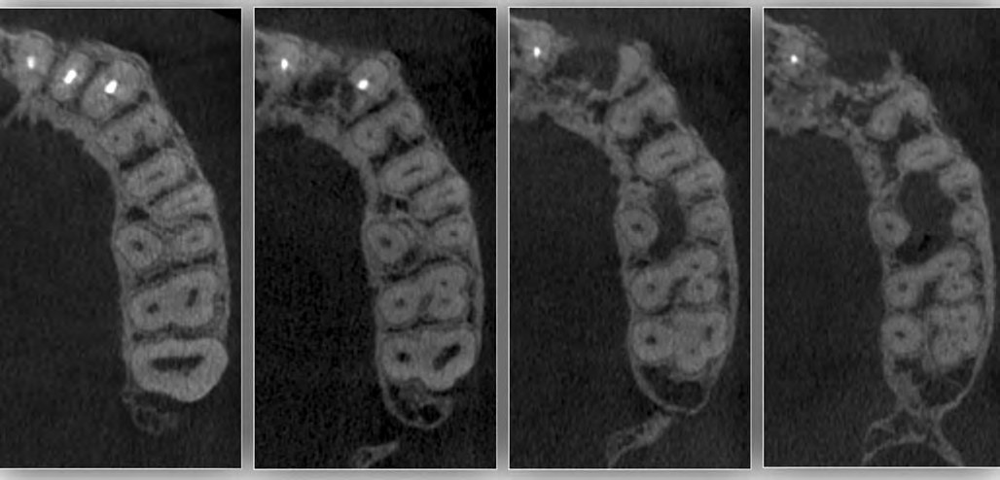
Хронічний процес у ділянці зуба 12 аксіально 10*12 мм
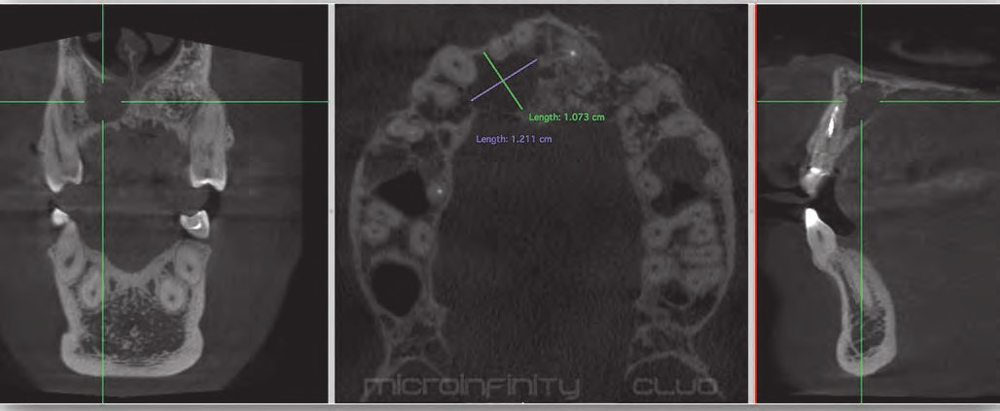
Резекція у ділянці зубів 22 і 23
Часто підхід до лікування передбачає планування прийому пацієнтів вузькоспеціалізованими фахівцями: лікарями-гігієністами, пародонтологами, терапевтами, ортопедами та стоматологами-хірургами. На попередніх стадіях часто виконуються такі маніпуляції, як синус-ліфтинг та імплантація, ендодонтичне лікування і відновлюються сильно зруйновані зуби.
Але важливо розуміти, що саме лікар-ендодонтист є експертом у своїй галузі і, маючи достатній досвід і знання, робить експертний висновок. На основі такого висновку лікар бере на себе відповідальність за остаточний результат. Однак слід пам'ятати, що на лікування ендодонтичної патології немає гарантій, а є тільки прогноз. Від правильної оцінки початкової ситуації, можливих ризиків і ускладнень на всіх етапах залежить успішність кожної маніпуляції. Саме лікар-ендодонтист роз'яснить всі тонкощі і складнощі лікування, оскільки саме він знає, як завершити його.
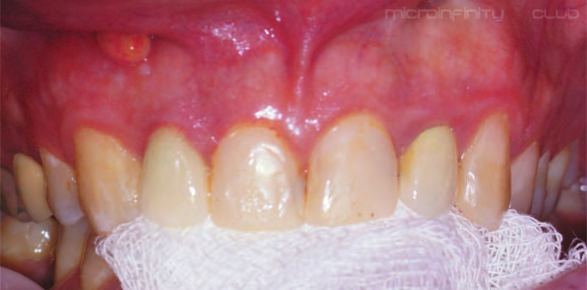
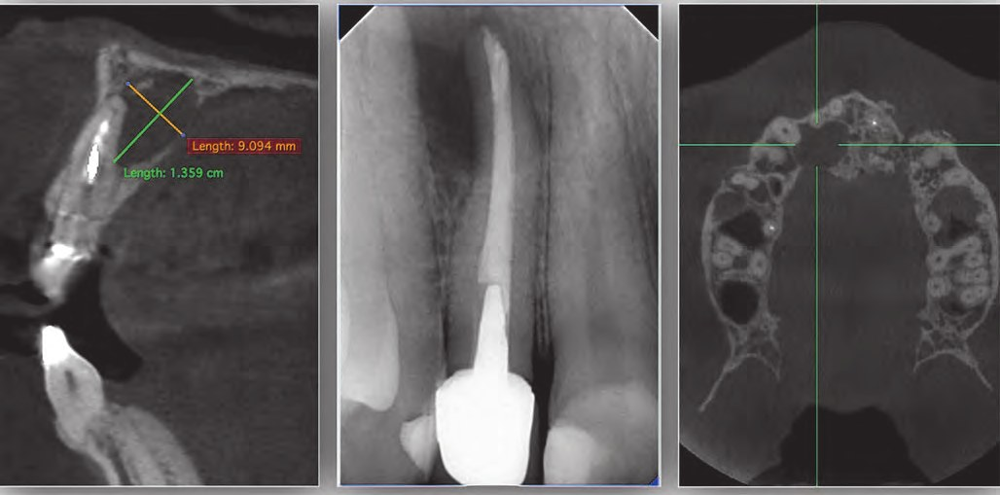
Робота стоматологів, які лікують кореневі канали, є дуже серйозною основою у підготовці ротової порожнини пацієнта. Перш ніж зосередитися на естетичних вимогах і завданнях, слід відновити функцію кожного зуба, який є базисом.
У цій статті аналізується клінічний випадок, коли пацієнт уже має встановлену ортопедичну конструкцію, зафіксовану на литу металеву куксу. Пацієнта зуб 12 турбує мимовільним болем та інколи проявами нориці на слизовій оболонці з виділенням гною. Такий стан у роті часто лякає пацієнтів, і, ясна річ, вони шукають відповіді в інтернеті. І вже після такого отриманого досвіду вони налякані, і переконати їх у позитивному результаті важко.
Відзначу і позитивну тенденцію: лікарі-імплантологи точно знають, що власний збережений зуб з біологічної точки зору – це краще, ніж імплантат.
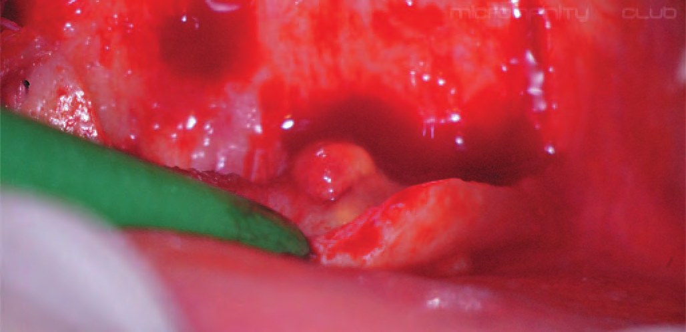
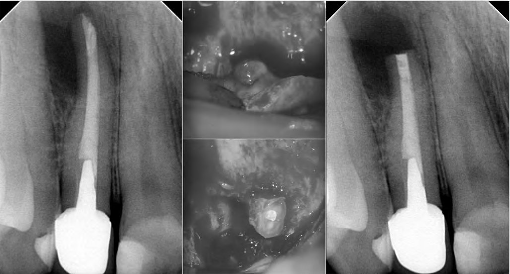
Однак невдачі в таких рятувальних зусиллях залежать від пародонтологічного стану пацієнта і певного людського фактора: багато пацієнтів дуже погано доглядають за своїми протезами або недооцінюють потребу професійної гігієни та профілактики, забуваючи про те, що навіть найменша пломба – це свого роду протез.
Пацієнт О. звернувся в клініку, бо його турбував зуб 12. Це якраз болюче питання для пацієнтів – зуби естетичної зони. З анамнезу з'ясовано, що ендодонтичне лікування проводилося давно і зуб спочатку не турбував. Але з часом він почав боліти, і в якийсь момент пацієнт помітив білу пляму на слизовій оболонці. Зрозуміло, що коли було проведене повторне ендодонтичне лікування, все було добре, та через деякий час загострення повторилося. Утворився норицевий хід. На прицільній рентгенограмі видно, що обтурація була проведена неякісно (апікальна перфорація), і це призвело до повторного загострення.
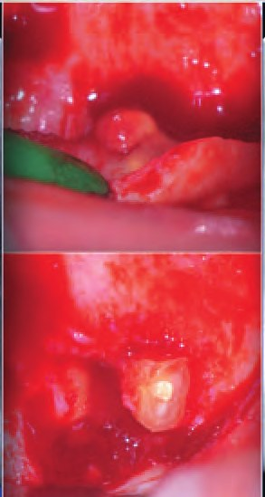
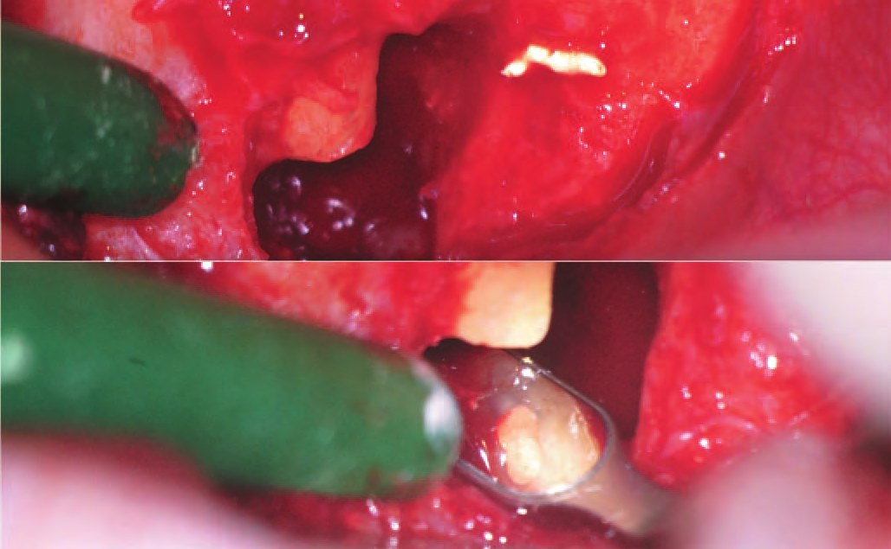
Під час прицільної рентгенографії виявлено об'ємний хронічний процес на апексі зуба 12. Рентгенодіагностика виявила приховані проблеми, які ставили під сумнів заплановані терміни лікування – загоєння не відбулося. У таких випадках, щоб дати повний об'єм інформації, потрібна КПКТ. Саме після такого аналізу можна пропонувати пацієнтові різні варіанти лікування.
Як уже було сказано, зуб мав металеву куксу та ортопедичну конструкцію, встановлену рік-півтора тому. У пацієнта запитання: що можна зробити? І тут потрібно дати йому можливість вибору: запропонувати видалення, видалення та імплантацію, ендодонтичне лікування зі зняттям коронки та вилученням кукси з каналу без гарантій, що такі маніпуляції не призведуть до тріщини зуба або у зуба залишиться достатньо тканин, щоб його знову відновити так, як було до втручання. Або запропонувати операцію, яка не тягне за собою все перераховане, але дасть досить серйозний, успішний результат. Ми говоримо зараз про апікальну хірургію.
І тут важливим аспектом є такий фактор, як консультація і роз'яснення, що таке апікальна хірургія. Бо у нашого пацієнта є в анамнезі проведення резекції в зубах 22 і 23. Це схоже за концепцією на хірургічне втручання, але воно має серйозні недоліки. На інтраоральному знімку та КТ видно, що було зроблено резекцію, але загоєння не відбулося. Частою помилкою при виконанні цих маніпуляцій є те, що лікарі не роблять чіткий зріз апікальної ділянки, препарування каналу, повноцінну цистектомію та обтурацію.
Пацієнтові пояснили складність ситуації і можливу недоцільність ортоградного лікування. Замість цього була запропонована хірургічна операція – апікальна хірургія (ретроградний доступ).
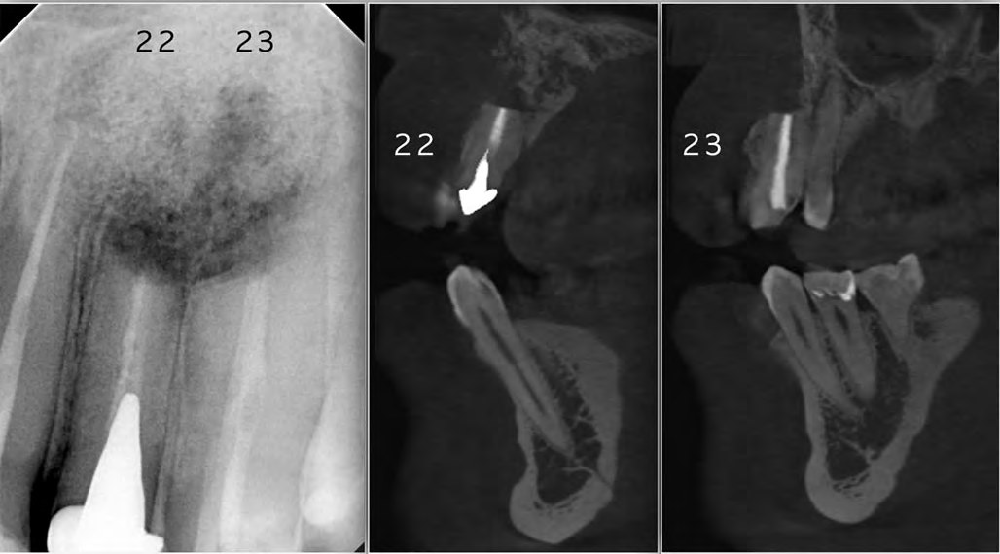
Зуб 12 мав бути врятований за будь-яку ціну, оскільки видалення в цій зоні може призвести до багатьох негативних моментів: складне формування кісткового об'єму з подальшим відновленням зони рожевої естетики може бути виконане за допомогою тривалого хірургічного лікування – імплантації і мукогінгівальної пластики, але в такому випадку лікування розтягується на тривалий час. Пацієнт погодився на операцію для збереження зубів.
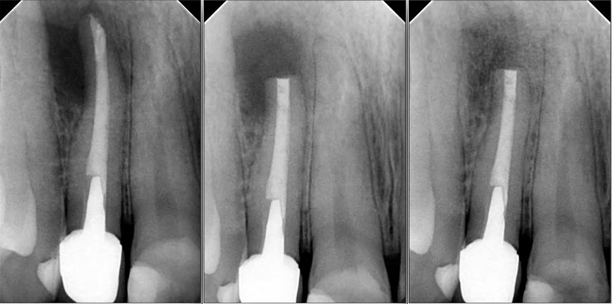
Виявити вогнище запалення було легко завдяки його об'єму. На момент відшарування слизового клаптя в зоні операції ще зберігався свищевий хід. Цю ділянку потрібно акуратно вирізати і відшарувати, щоб вона не перфорувалася сильніше або не порвалася. Якщо це станеться, буде набагато складніше зіставити клапоть під час зшивання і доведеться накладати більше швів. У такому випадку досягти рожевої естетики в цій зоні буде складніше без додаткових хірургічних маніпуляцій. Незалежно від обсягу ураження, підсипати кісткові препарати для візуалізації процесу загоєння не потрібно. Але щоб слизова оболонка не вростала в зону операції, перед початком операції можна відразу взяти кров з вени пацієнта і зробити матрицю PRF, яка може компенсувати кістковий об'єм, укласти слизово-надкістковий клапоть і ушити операційну рану.
Операція тривала протягом 1,2 години – це з урахуванням проведення анестезії для правильного гемостазу, який для таких маніпуляцій має свій час.
Чим довше триває операція, тим більше набряків і можливих больових відчуттів. Обтурація апікальної частини виконана біокерамікою. Її консистенція і можливість вносити її порційно одночасно скорочують терміни операції, що не менш важливо. Використання таких матеріалів, як МТА, дещо ускладнює порційне внесення та обтурацію, оскільки його консистенція не така зручна. Існують спеціальні шприци для ретроградного внесення матеріалу, але вартість таких інструментів велика і їх використання часто зводиться до мінімуму через ціну.
Не можна не зазначити, що без використання операційного мікроскопа така операція тривала б довше і такі маніпуляції, як резекція апікальної ділянки, розпломбування каналу ретроградно на три міліметри (мінімум) довжини каналу і обтурація на ту саму глибину, звелися б до мінімуму. Контролювати такі маніпуляції без збільшення неможливо. Необхідно бачити і контролювати напрямок УЗ насадок, якими ретроградно розпломбовують кореневий канал, щоб кінчик цієї насадки йшов по осі каналу, а не вбік. Для виявлення можливих тріщин або розтріскування потрібно профарбувати зону резекції, а також слід контролювати якість обтурації апікальної частини, щоб прибрати можливі залишки пломбувального матеріалу.
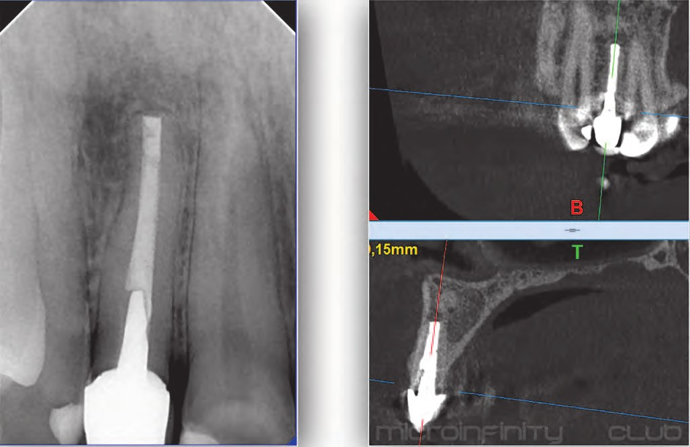
Очевидно, що для ретроградного доступу до кореневого каналу недостатньо лише кюретажу періапікального патологічного вогнища, тому потрібна резекція верхівки кореня причинного зуба. Окрім видалення уражених тканин, це дозволяє візуалізувати топографічні особливості кореня та каналу, включаючи перешийки. Як відомо, дельта, додаткові канали та перешийки часто містяться в апікальному відділі кореня в межах 3 мм від анатомічної верхівки кореня зуба. Таким чином, резекція верхівки кореня на зазначеній відстані усуває ці утворення разом з їх вмістом і полегшує доступ до основного кореневого каналу. У деяких випадках ортоградна обробка кореневих каналів неможлива (наприклад, при кальцифікації пульпи, перфораціях, застряглих уламках інструментів), але ці перешкоди значно легше усунути ретроградним доступом, іноді одночасно з резекційною частиною кореня.
Операція проведена за протоколом. Шви зняті на третю добу, і найбільші переживання були пов'язані з відновленням слизової оболонки в зоні розрізу, оскільки це дуже помітна частина при широкій усмішці пацієнта. Джерелом концепції залишення швів на тиждень або довше є література з пародонтології.
У пародонтальній хірургії м'які тканини відшаровуються, створюючи доступ до патологічної тканини, яку потрібно видалити за допомогою кюретажу та висічення. Клапоть часто вшивають в іншому положенні, що відрізняється від початкового: або в апікальному, або в коронковому. В ендодонтичній мікрохірургії клапоть піднімають, щоб отримати доступ до верхівок коренів.
Коронка і шийка зуба, як правило, не змінені. М'які тканини розташовані точно в початковому положенні.
Загоєння репозиціонованої тканини пародонта часто відбувається шляхом прикріплення і передбачає загоєння первинним натягом.
Через два місяці з'явилася позитивна динаміка загоєння. Пацієнт задоволений результатом, тому що його ніщо не турбує, проявів нориці більше не було.
На цьому етапі життя пацієнтові не довелося робити заміну конструкції, яку було встановлено нещодавно. Головне, щоб тепер була можливість контролювати загоєння і отримати його віддалений результат.
Приємно після закінчення лікування зустріти щасливу людину, у стоматологічній долі якої ви брали безпосередню участь. Тепер пацієнт розуміє, що зуби 22 і 23, які так само потребують проведення апікальної хірургії, можуть отримати якісне лікування і не буде жодних показань до видалення та імплантації.
Висновки
Тепер при спілкуванні з пацієнтом не буде жодних незрозумілих для нього пояснень від лікаря. Пацієнт уже знає, як відбувається така маніпуляція, і спокійніше зможе сприймати інформацію. Таким чином, уже не буде страху, а залишиться тільки довіра. Головне, що апікальна хірургія дає можливість поширення спектра зубозберігаючих маніпуляцій. Для успішного проведення таких маніпуляцій оператор повинен дуже добре працювати в мікроскоп. Почніть працювати в мікроскоп!